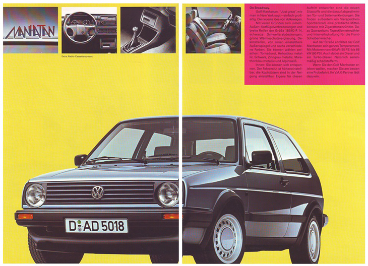 VW Golf mk2 Manhattan Manhattan — 1988 год, Германия. Линейка двигателей: бензиновые от 1.3 55лс до 1.8 90лс, дизельные — 1.6 от 54 до 70лс. Цвета: Альпийский белый (L90E), Торнадо Красный (LY3D), Гелиос Синий (LA5Y), Черный (L041), Марафон Голубой (SK9960), Оловянный серый (SK9727). Экстерьер: Узкие бампера, двухглазая морда, зеленые стекла. Диски — штамповки 6х14 с центральными колпаками и пластиковыми декоративными ободами. Шины 185/60х14 Интерьер. Ткань серо-синяя"Colorkaro" со вставками красных и зеленых тонких полосок. Дверные карты также "Colorkaro", "подоконники" из черного "кож.зама". Водительское сидение с регулировкой по высоте. Передние подголовники с регулировкой по высоте и наклону. Четыре-спицевое спортивное рулевое колесо. Центральная консоль с пепельницей и прикуривателем. Зеркало для макияжа в пассажирском солнцезащитном козырьке.
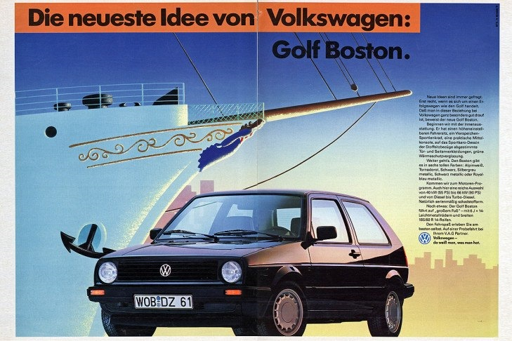 VW Golf mk2 Boston Германия, 1989 год выпуска. Линейка двигателей: Бензиновые 1.3 55лс в сочетании с 4МКПП/5МКПП (MH, NZ), 1.6 70/72/75лс с 4МКПП/5МКПП/АКПП (PN, RF, EZ), 1.8 85/90/90лс 5МКПП/АКПП (RH, GX, RP). Дизельные 1.6лс с 4МКПП/5МКПП/АКПП (JP), 1.6 70лс с 5МКПП (MF). Цвета Boston: Альпийский белый (L90E), Торнадо Красный (LY3D), Черный (L041), Бриллиантовый черный металлик (LA9V), Серебристо-серый металлик (LD7V), Королевский синий металлик (LA5U). Экстерьер: Узкие бампера, двухглазая морда, зеленые стекла. Диски легкосплавные Montreal 6х14, шины 185/60х14. Надписи "Boston" на задних крыльях и сзади под шильдой "GOLF", возможна тонкая декоративная полоска по обоим бортах от крыла до крыла. Интерьер: Отделка сидений и дверных карт собственной тканью "мультицвет" — серое полотно с черными, синими, красными и зелеными полосками. Водительское сидение с регулировкой по высоте и наклону). "Подоконники" дверных карт выполнены из черного "кож.зама". Ковры черные. Четыре-спицевое рулевое колесо. Борода с пепельницей и прикуривателем. Опционально были доступно зеркало в солнцезащитном козырьке со стороны пассажира.
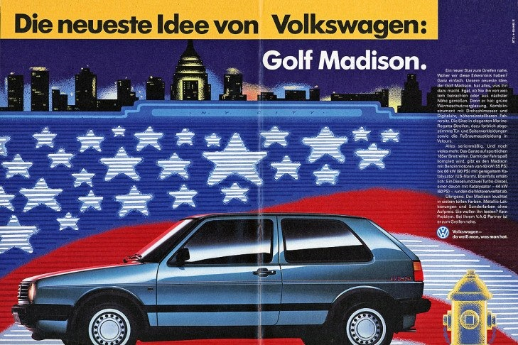 VW Golf mk2 Madison Германия, 1990 год выпуска. Линейка двигателей: бензиновые 1.3 55лс (NZ) с 4МКПП и 5МКПП; 1.6 70лс (PN) и 1.8 90лс (RP) были доступны как с 5МКПП, так и с АКПП. Что касается дизельных двигателей, на Madison устанавливались 1.6 60лс (1V), 70лс (MF), 80лс (RA) — все с 5МКПП. Также устанавливался самый слабый в линейке 1.6 54лс (JP), и вместе с ним были возможны и 4МКПП, и 5МКПП, и АКПП! Цвета Madison: Альпийский белый (L90E), Торнадо Красный (LY3D), Черный (L041), Бриллиантовый черный металлик (LA9V), Серебристо-серый металлик (LD7V), Королевский синий металлик (LA5U), Монтана зеленый металлик (LB6Z). Экстерьер: Узкие бампера, двухглазая морда, зеленые стекла. Диски — штамповки 6х14 с центральными колпаками и пластиковыми декоративными ободами. Шины 185/60х14. Надписи "Madison"на задних крыльях и сзади под шильдой "GOLF", на обоих бортах от крыла до крыла нанесена тонкая декоротивная полоска Интерьер: Отделка собственной тканью "морская полоса" — серое полотно с тонкими полосками синего, голубого и бежевого цветов. Этой тканью отделаны сидения с подголовниками (передние — с регулировкой по высоте и наклону), дверные карты ("подоконники" выполнены из черного "кож.зама"). Четыре-спицевое спортивное рулевое колесо
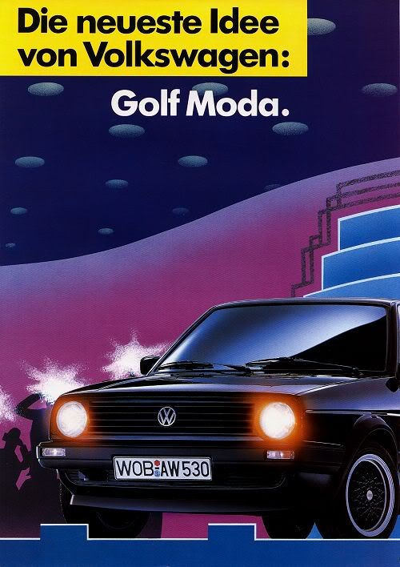 VW Golf 2 Moda 1990 год выпуска, Германия. Цвет: Черный (L041), Бриллиантовый черный металлик (LA9V), Бургундия- темно-фиолетовый перламутр (LC3U) Двигатель: Бензиновые 1.3 55лс в сочетании с 4МКПП/5МКПП (NZ), 1.6 70лс в сочетании с 5МКПП/АКПП (PN), 1.8 90лс 5МКПП/АКПП (RP); Дизельные 1.6 54лс с 4МКПП/5МКПП/АКПП (JP), 1.6 60/70/80лс с 5МКПП (1V, MF, PA соответственно). Экстерьер: двухглазая морда, узкие бампера c белыми поворотниками, поворотники в передних крыльях. Задние фонари — Hella Red-Black. Зеленые атермальные стекла. Диски легкосплавные BBS RA 6х15 — центральная часть окрашена в черный цвет, обод — серебристый; шины 185/55х15. Надписи "Moda" на задних крыльях и сзади под шильдой "GOLF". Интерьер: Отделка салона и сидений собственной тканью — серое полотно с синими, желтыми, красными и серыми полосками. Водительское сидение с регулировкой по высоте и наклону. "Подоконники" дверных карт выполнены из черного "кож.зама". Ковры черные. Четырех-спицевое рулевое колесо.
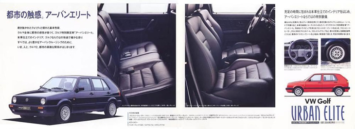 VW Golf mk2 Urban Elite — ограниченная серия 1000шт (из них 575 Гольфов праворульных, а 425 — леворульных) Япония, 1991 год выпуска. Линейка двигателей: Бензиновый 1.8 8v 107лс (RV) АКПП Экстерьер: Только пятидверные хетчбэки. Широкие бампера с ПТФ, двухглазая морда, поворотники в передних крыльях. Зеленые стекла. Диски легкосплавные BBS RA 6х15, шины 185/55х15. Интерьер: Сидения передние кожаные ВАГ-спорт с подогревом, с регулировкой водительского по высоте, задний диван кожаный, дверные карты — кожа. Руль, селектор КПП, ручник — кожа. Торпедо мягкая. Ковры, потолок, пластик в салоне — черные. Центральная консоль — с пепельницей и прикуривателем. Также в данной комплектации были: центральный замок, передние электростеклоподъемники, ГУР, акустическая система "Volkswagen Sound" с 6 динамиками, приборка с тахометром и цифровыми часами.
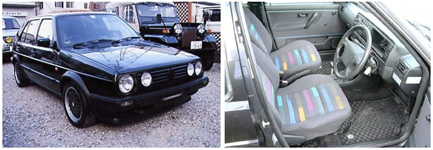 VW Golf mk2 Black Limited Япония, 1991 год выпуска. Линейка двигателей: Бензиновый 1.8 8v 107лс (RV) 5МКПП. Цвет: Бриллиантовый черный металлик (LA9V) Экстерьер: четырехглазая морда с черным значком "VW", узкие бампера с белыми поворотниками и GTI-губой, оранжевые поворотники в передних крыльях. Задние фонари — Hella Red-Black. Стержневая антенна. Зеленые атермальные стекла. Диски легкосплавные BBS RA 6х15 — центральная часть окрашена в черный цвет, обод — серебристый; шины 185/55х15. Интерьер: Четырех-спицевое рулевое колесо — справа. Отделка салона и сидений тканью "MODA" — серое полотно с синими, желтыми, красными и серыми полосками. Водительское сидение с регулировкой по высоте и наклону. "Подоконники" дверных карт выполнены из черного "кож.зама". Ковры черные. Также в данной комплектации были: центральный замок, передние электростеклоподъемники, ГУР, акустическая система "Volkswagen Sound" с 6 динамиками, приборка с тахометром и цифровыми часами. За дополнительную плату были доступны установка АКПП и люка.
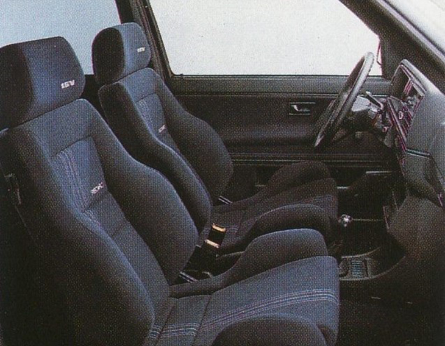 VW Golf mk2 Edition One — ограниченная версия, около 11.000шт. Германия, 1989-91 г.г. выпуска Линейка двигателей: Бензиновые 1.8 8v 107лс (PF), 1.8 16v 129/139лс (PL/KR) и 1.8 8v G60 160лс (PG) — все в паре с 5МКПП. Цвета: Бриллиантовый черный металлик (LA9V), Жемчужно-серый металлик (LA7U), Кварцевый серый металлик (LD7Y), Темно-фиолетовый "Бургундия" (LC3U). Экстерьер: четырехглазая морда с черным значком "VW", без красной GTI-полоски, широкие бампера с белыми поворотниками, ПТФ и GTI-губой. В передних крыльях — на месте поворотников — эмблемы "Wolfsburg Edition". Задние фонари — Hella Red-Black. Зеленые атермальные стекла. Диски легкосплавные двух-составные BBS RM 6.5х15 серебристого цвета; шины 195/50х15. Корпуса зеркал окрашены в цвет кузова. Логотип "Edition One" на левом углу капота. Узкие молдинги, широкие серпы. Интерьер: Кожаное четырех-спицевое рулевое колесо. Отделка салона и сидений тканью "Avantage" — сине-серое полотно с синими, темно-красными и серыми полосками. Сидения: на 1.8 8v — VAG-Sport с регулировкой по высоте и наклону; имеют вышивку "Edition"; на 1.8 16v и G60 — Recaro c электро-регулировкой, имеют вышивку "Recaro", а на подголовниках KR и PL еще и вышивку "16v". "Подоконники" дверных карт выполнены из черного "кож.зама". Рычаг переключения передач и ручник — отделаны черной кожей. Также в данной комплектации были: MFA, ГУР, АБС (только на G60). За дополнительную плату были доступны: ABS (для версий кроме G60); приборка DigiFiz; Кожаный салон; Кондиционер; Подогрев сидений.
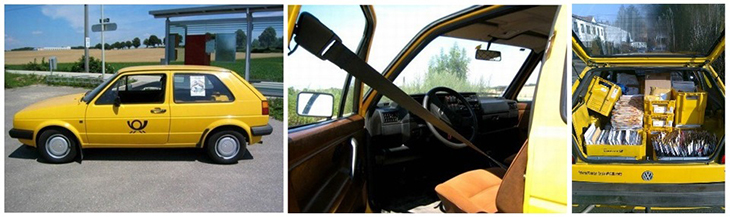 VW Golf 2 Post-Golf Специальная версия Гольф2, изготовленная для немецкой почты. Возможна комплектация, в которой отсутствуют задние стекла, вместо которых металлические вставки. Цвет — желтый (в свободной продаже г2 с таким цветом не было). Двигатель только дизельный 1.6 54лс (JP)
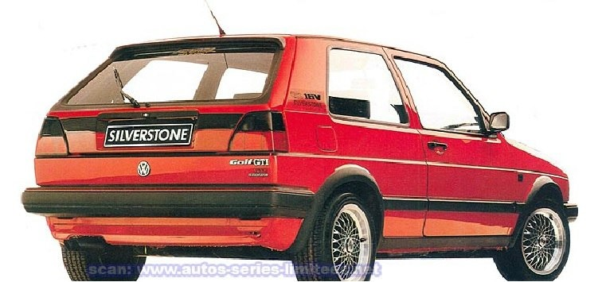 VW Golf 2 Silverstone 1988 год выпуска, Швейцария. Ограниченная версия в 1000 штук. Только 3х-дверные. Четырехфарная морда. Узкие бампера с красной полоской. ГТИ губа. Люк. Логотипы "GTI 16V Silverstone". VAG-sport c регулировкой водительского сидения по высоте. Памятная табличка на торпедо с персональным порядковым номером. Приборка DigiFiz. ГУР. Двигатель только 1.8 16v129hp Были покаршены в 3 цвета: Альпийский Белый — L90E, Торнадо красный — LY3D, Черный — L041.
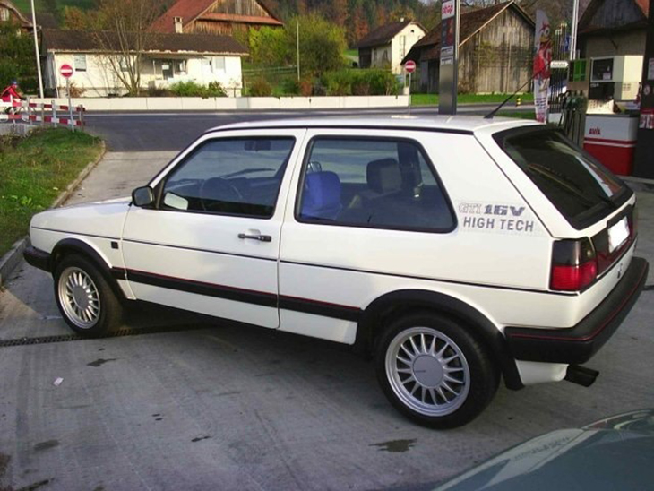 VW Golf mk2 High Tech — ограниченная версия 1000 штук. 1987 год выпуска, Швейцария. Цвет: только Альпийский Белый — L90E. Двигатель: только 1.8 16v 129hp (PL) с 5МКПП. Экстерьер: Только 3х-дверные. Четырехфарная морда. ГТИ губа. Узкие бампера с красной полоской. Широкие молдинги. Люк. Антена на крыше. Задний спойлер. Логотипы "High Tech" на задних крыльях. Интерьер: Черный салон. VAG-sport c регулировкой водительского сидения по высоте. Памятная табличка на торпедо с персональным порядковым номером. Приборка DigiFiz. ГУР и так далее. По сути эта комплектация является предшественником Silverstone, который появится в 1988 году.
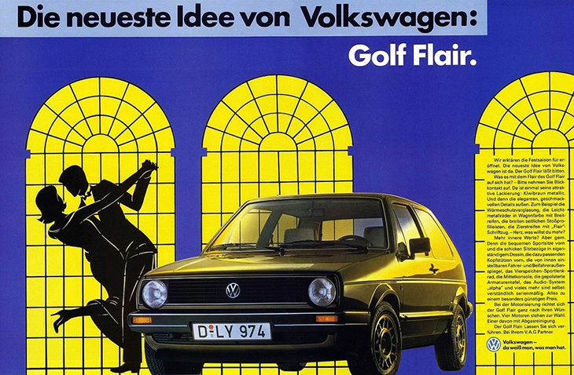 VW Golf mk2 Flair Германия, 1986 год выпуска. Количество выпущенных Гольф2/Джетта2 в комплектации Flair — 8000 шт. Стальные диски 6х14 с колпаками. Шины 185/60 R 14. Зеркала окрашены в цвет кузова Зеленые стекла Эмблемы "Wolfsburg" в передних крыльях Четырехспицевый руль от ГТИ Передние сидения ВАГ-спорт Мягкая торпедо И так далее. Линейка двигателей от 1.3 55 лс до 1.8 90 лс Flair выпускался только в 1 цвете — "Коричневый Киви" — LP6V
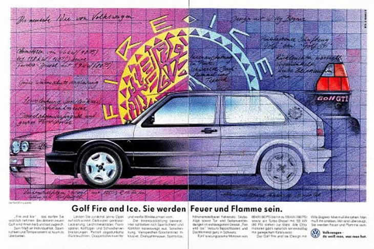 VW Golf 2 Fire & Ice — ограниченная версия ~7000шт. Германия, 1990-91 года выпуска. Линейка двигателей: Бензиновые 1.8 90лс в сочетании с 5МКПП/АКПП (RP), 1.8 107/129/160лс с 5МКПП (PF/PL/PG соответственно); дизельный только 1.6 80лс с 5МКПП (SB). Цвет Fire & Ice — темно-фиолетовый с перламутровым эффектом (LC4V). Экстерьер: легкосплавные диски 6х15 "Estoril", шины 185/55х15. Зеленые стекла. Четырехглазая морда с черным VW-значком. Широкие бампера, ГТИ-серпы и пластиковые пороги, узкие молдинги, зеркала в цвет кузова, задние фонари — Hella Black. Круглые логотипы " Fire & Ice" на задних крыльях. Задний спойлер. Интерьер: Ткань отделки салона фиолетово синяя. Передние сиденья ВАГ-спорт с вышивкой логотипа "Fire & Ice" на спинках, водительское — с регулировкой по высоте. Черные пол, потолок, козырьки и т.д. Мягкая приборная панель. Логотип "Fire & Ice" на пепельнице. Комплектация включала ГУР, Тахометр.
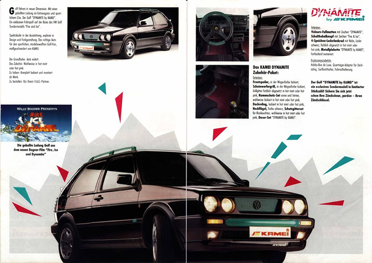 VW Golf 2 Dynamite Германия, 1991 год. По сути знаменитый Fire and Ice, но выполненный ограниченной тюнинг-версии от KAMEI. Все автомобили были проданы через сеть официальных автосалонов Фольксваген. Создание этой версии связывают с фильмом "Fire, Ice & Dynamite". Двигатели: бензиновые 1.8 90/107/129 лс и дизельный 1.6 80лс. Экстерьер: Доступен только в 1 цвете — Темнофиолетовый перламутр (LC4V). Диски "Estoril", 6х15, Шины 185/55 R 15 V. Зеленые стекла. Четырехфарная морда. Задний спойлер. Решетки на задних фонарях. Окрашенные передний спойлер и фар гриль в цвет кузова. "Защита от столкновения" спереди и сзади, представляющая собой что-то среднее между кенгурятником и дополнительным усилителем бампера; на крыше установены рейлинги — окрашивались в цвета: горячая мята или ярко-розовый). Интерьер: Логотип "Fire and Ice" на пепельнице. Рукоятка рычага переключения передач с логотипом "Fire and Ice". 4-спицевое рулевое колесо (горячая мята или ярко-розовое). Металлическая шильда «Dynamite by Kamei" c индивидуальным номером. Всего было выпущено 150штук в комплектации Dynamite.
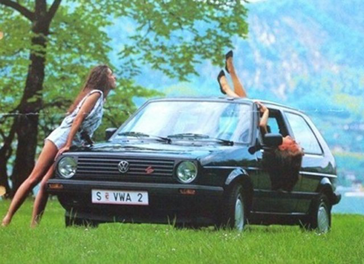 VW Golf mk2 Happy Rabbit Австрия, 1990год выпуска. Линейка двигателей: бензиновые 1.3 55лс 4МКПП (2G), 1.6 70лс 5МКПП (PN); дизельные 1.6 54лс 4МКПП (JP) и 1.6 60лс 5МКПП (1V) Цвета Happy Rabbit: специальный цвет Синий Гольф, Альпийский белый (L90E), Торнадо Красный (LY3D), Черный (L041), Серебристо-серый металлик (LD7V), Королевский синий металлик (LA5U). Экстерьер: Узкие бампера, двухглазая морда с шильдой изображающей бегущего кролика, зеленые стекла, задний спойлер. Диски — штамповки 5.5х13 с центральными колпаками ; шины 175/70х13. Интерьер: Отделка тканью "Hahnentritt" — серо-черная ткань с коричневыми, зелеными и синими полосками. Солнцезащитные козырьки с поворотно-складным механизмом, в пассажирском козырьке — зеркало. Также имеется "борода". В дверных кармашках — небольшие ящики (на месте динамиков). Опционально: доступна установка люка.
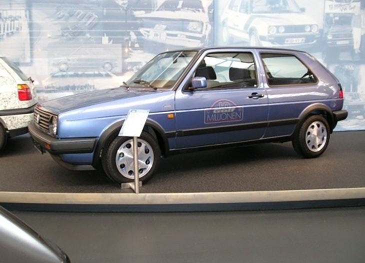 VW Golf mk2 10 Million — ограниченная версия 16500шт. Германия, 1988 года выпуска. Линейка двигателей: Бензиновые 1.3 55лс в сочетании с 4МКПП/5МКПП (MH), 1.6 70/72лс в сочетании с 4МКПП/5МКПП/АКПП (PN и RF соответственно), 1.8 85/90лс с 5МКПП/АКПП (RH/RP соответственно); дизельный только 1.6 70лс с 5МКПП (JR). Цвет 10 Million — звездно-синий металлик (LD5T). Экстерьер: Кузов 3/5ти дверный хетчбэк, легкосплавные диски 6х14 "Silverstone", шины 185/60х14. Голубые стекла. Зеркала окрашены в цвет кузова. Двухглазая морда с хромированным VW-значком. Узкие бампера, широкие молдинги. Задние фонари — Hella Black. Логотипы "10 Million" на передних крыльях, сзади под шильдой Гольф. Интерьер: Ткань отделки диагональная сине-голубая полоска. Передние сиденья ВАГ-спорт, водительское — с регулировкой по высоте. Мягкая приборная панель. 4-спицевое спортивное рулевое колесо. Центральная консоль с пепельницей и прикуривателем. Зеркало в козырьке пассажира.
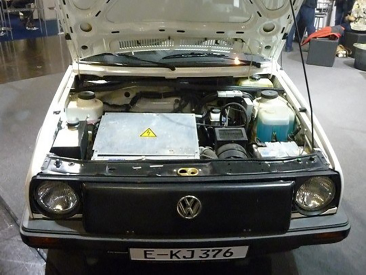 VW Golf 2 City Stromer — ограниченная версия 120шт. 1990-91г.г. выпуска, Германия. Цвет City Stromer: Белый Альпийский белый (L90E). Двигатель: Мощность двигателя 27л.с. в сочетании с 4МКПП. Привод на передние колеса. Максимальная скорость — 100 км\ч. Максимальный запас хода 60-70 км (Замеры проводились в сухую погоду при температуре окружающей среды 15'C), номинальный запас хода — 40км. Зарядка происходит от обычных "бытовых" электрических розеток 220в. Снаряженная масса с батареями — 1136 кг. Экстерьер: Двухглазая морда. Узкие бампера. Диски — штамповки 6х14 с центральными колпаками и пластиковыми декоративными ободами. Шины 185/60х14. Надписи "City Stromer"на задних крыльях и\или сзади под шильдой "GOLF". Интерьер: Количество мест — 2. Другие данные отсутствуют.
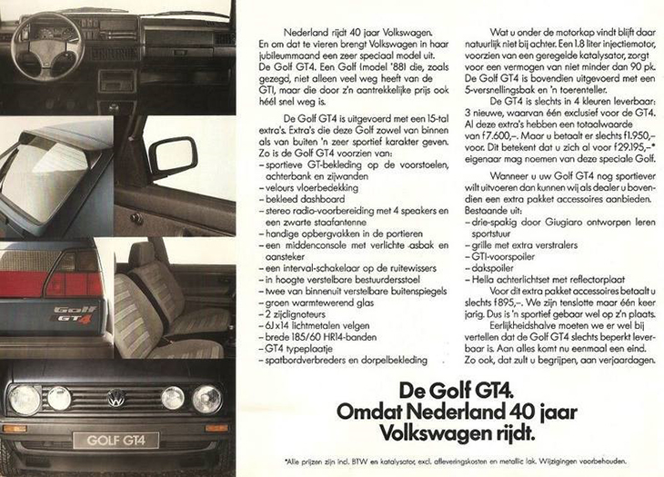 VW Golf mk2 GT4 — ограниченная версия, 400шт., Нидерланды, 1987г. выпуска Линейка двигателей: Бензиновые 1.8 8v 90 в паре с 5МКПП. Цвета: Синий Гелиос металлик (LA5Y). Экстерьер: кузов только 3х дверный хэтчбек, двух- или четырехглазая морда с хромированным значком "VW", узкие бампера с оранжевымиповоротниками. В передних крыльях располагаются повторители поворотников. Диски легкосплавные 6х14 серебристого цвета; шины 185/60х14. Интерьер: рулевое колесо трехспицевое, "Подоконники" дверных карт выполнены из черного "кож.зама". Также в данной комплектации за дополнительную плату были доступны: ГТИ-губа. Задние фонари Hella Red-Black, бленда Hella Red-Black, спойлер на задней двери.
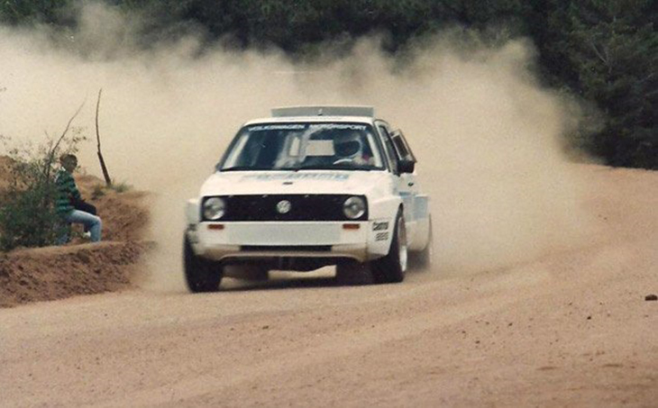 VW Golf 2 Pikes Peak Германия, 1986-87г.г. Ограниченная серия из нескольких штук, специально созданная для ралли-гонки "Пайкс-Пик *. Двигатели: 1986год — 2 x 1.3 с которых снимали 250л.с. с каждого. 1987год- 2 х 1.8, с которых снимали по 326л.с. с каждого.